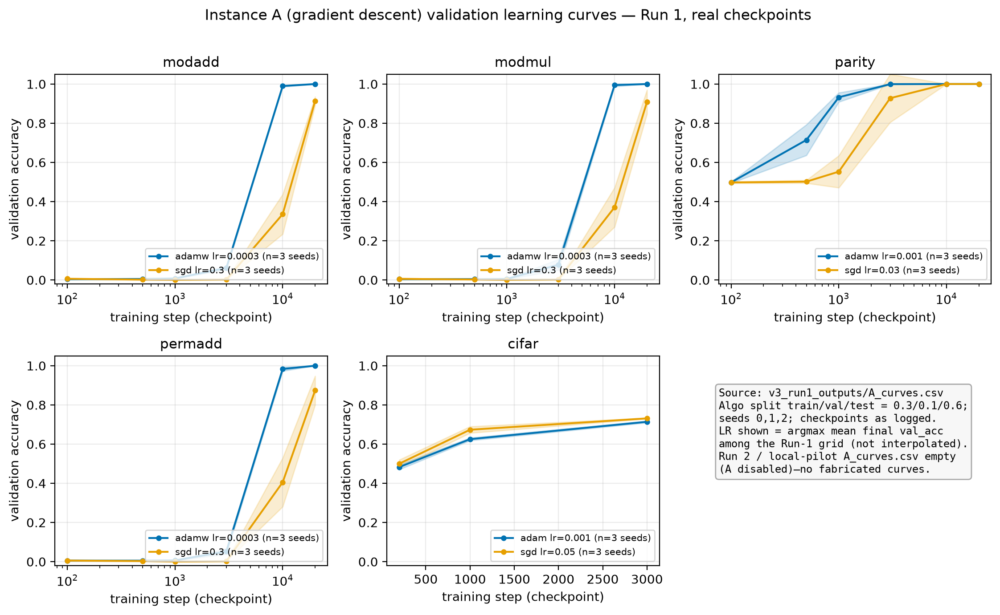
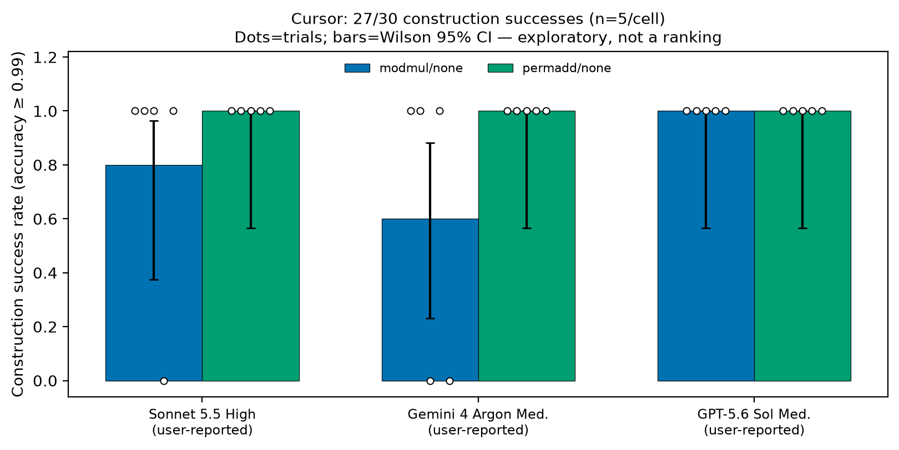
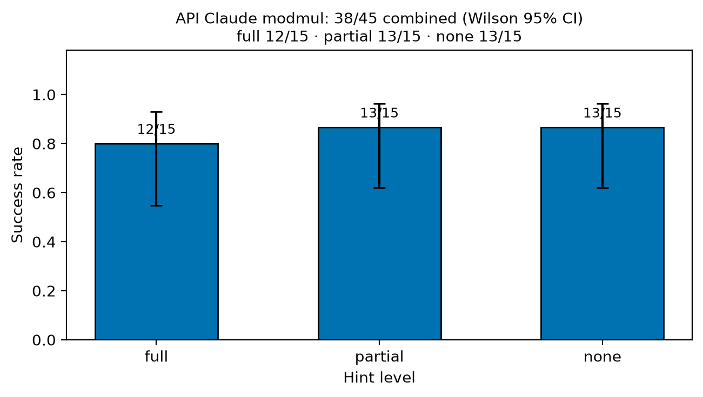
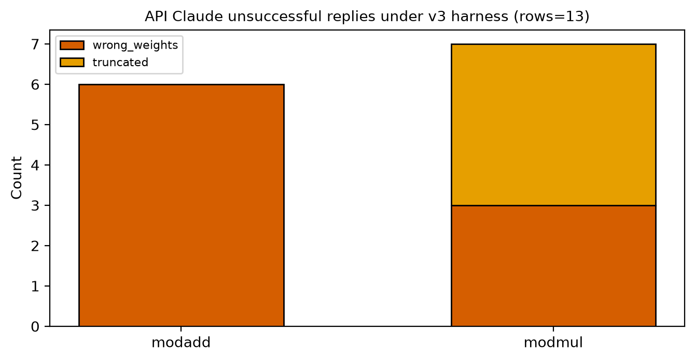
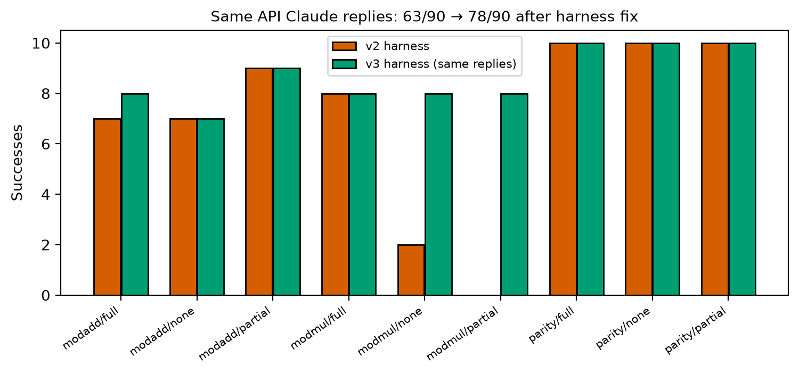
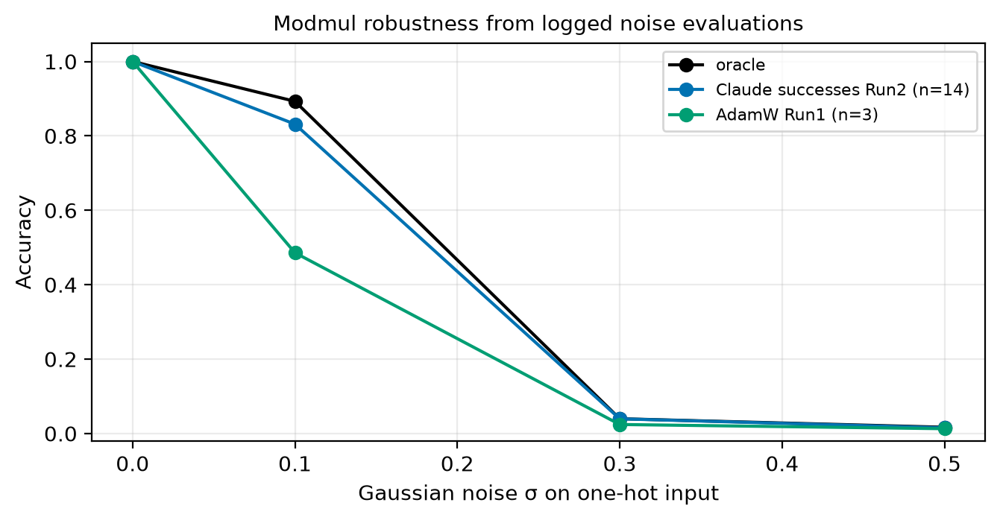
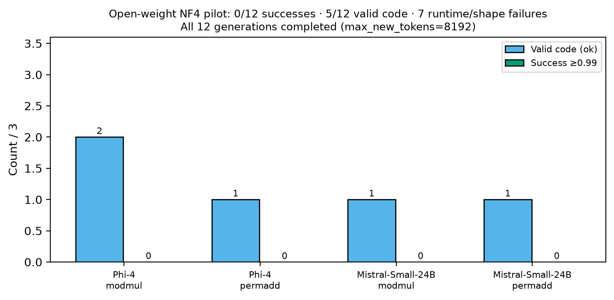
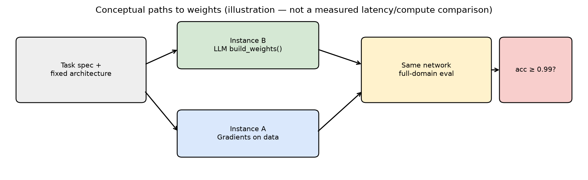
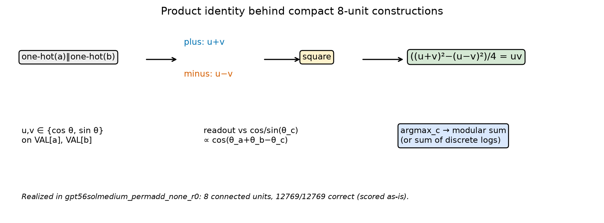
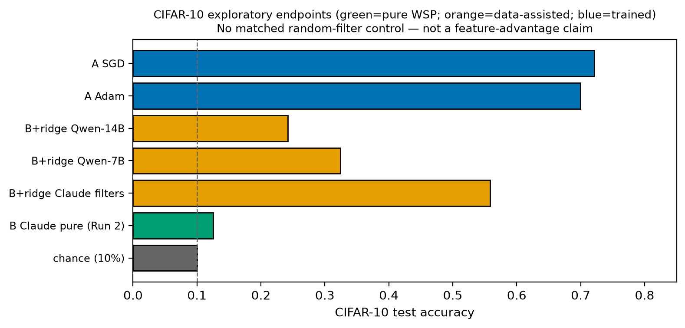

We ask whether language models can directly construct working neural network weights—emitting a Python build_weights() function that returns NumPy arrays of exact shapes—without gradient training, on small modular-arithmetic networks with known analytic solutions.
Across separately labelled channels we measure how often closed chat models succeed on these tasks, at small, exploratory sample sizes.
On a Cursor chat channel (no-hint prompts; n=5 per model×task cell; model labels user-reported; session conditions author-attested), construction success reaches 27/30, including a perfect 15/15 on permuted modular addition.
Via the Anthropic API, Claude Sonnet (claude-sonnet-5-5) reaches 38/45 on modular multiplication across hint levels (full 12/15, partial 13/15, none 13/15), and 92/105 across modadd/modmul/parity under a corrected harness.
Successful constructions are compact analytic programs (Fourier features; discrete-log reduction; supplied-VAL adaptation) that we verify on the full finite domain (12,544 or 12,769 inputs).
Open-weight pilots are a genuine boundary: Phi-4 and Mistral-Small-24B complete a verified NF4 run with 0/12 successes (5 valid code, 7 runtime/shape failures); earlier Qwen runs are 0/72 under a shorter 2048-token cap.
We report harness undercounting (63→78/90 on identical Claude replies), verbatim success and failure programs, and real Instance A learning curves from logged checkpoints.
This is an exploratory, heterogeneous multi-channel study of analytic weight construction—not a claim of general-purpose model writing, not a definitive ranking, and not a time-trend analysis.
The Cursor count is mathematical construction success after documented extraction, including one formatting exception, not a strict raw-response compliance rate. Reliability estimates are exploratory: with n=5 per cell, the per-cell 95% intervals are wide, and channels are not a controlled head-to-head ranking.
Gradient descent writes nearly all modern neural weights. A complementary question is whether a language model, given a textual task specification and a fixed architecture, can emit those weights directly. Following Takehi, Teoh, Zhang, and Khattab (2026), who introduced the term Weight-Space Programming, we study a checkable slice of that idea: square-activation MLPs for modular arithmetic, where analytic constructions are known (Gromov, 2023).
Lead finding. On the modular tasks we study, closed models in our API and Cursor channels frequently construct weights that achieve ≥0.99 accuracy across the complete input domain—without training data or gradients.
The practical artifact is a short, auditable build_weights() program, not a vague claim that “models write models.”
Failures and open-weight negatives delimit the boundary; they are not the headline.
Channels differ in interface, sampling control, and how session conditions are documented; we report them separately and do not pool them into a leaderboard.
Takehi et al. (2026) coin Weight-Space Programming in a blog post (MIT CSAIL authors) with released logs (https://rikiyat.github.io/blog/weight-space-programming/). We attribute the term to them and do not rest our claims on their single-run demonstrations. Gromov (2023, arXiv:2301.02679) gives closed-form Fourier-feature solutions for modular addition. Weiss et al. (2021) introduce RASP; Lindner et al. (2023, arXiv:2301.05062) compile RASP to transformer weights (Tracr). Ha, Dai, and Le (2016, arXiv:1609.09106) train hypernetworks to generate weights. Our Instance B setting asks a frozen chat model to emit weights for a fixed MLP from natural language.
build_weights() → NumPy dict; no data, no gradients. Primary object.
Modular nets: concat one-hots → h=(x W1ᵀ)² → logits h W2ᵀ; shapes W1 (256×226), W2 (113×256). Success: execute, exact shapes, finite weights, accuracy ≥0.99 on all inputs. np/math pre-provided.
| item | value |
|---|---|
| Algorithmic split (train,val,test) | 0.3, 0.1 (test 0.6) |
| Seeds A | 0,1,2 |
| Algo checkpoints | 100,500,1000,3000,10000,20000 |
| CIFAR checkpoints | 200,1000,3000 (from A_curves) |
| AdamW wd / betas | 1.0 / (0.9, 0.98) |
| SGD momentum / wd | 0.9 / 1e-4 |
| Algo LR grid AdamW | 3e-4, 1e-3, 3e-3 |
| Algo LR grid SGD | 0.03, 0.1, 0.3 |
| CIFAR LR Adam / SGD | 3e-4,1e-3 / 0.01,0.05 |
| Success threshold (algo B) | accuracy >= 0.99 on all inputs |
| API model id | claude-sonnet-5-5 |
| API algo max_tokens | 6000 |
| Local Phi/Mistral max_new_tokens | 8192 |
| Local Qwen max_new_tokens | 2048 (caveat) |
| Parity subset (seed 1234) | {2,5,10,11,12,14} |
Algorithmic Instance A uses full-batch cross-entropy, gradient clipping at norm 1, and seed-specific random splits. For each task/optimizer, Figure 1 selects one learning rate by highest mean validation accuracy across seeds at the final logged checkpoint, then displays all logged validation checkpoints (sample SD, not a confidence interval). Test accuracy does not select the learning rate. Lines connect measured checkpoints; no intermediate measurements are implied. CIFAR instead uses 45,000 training and 5,000 validation images from the official training set and the official 10,000-image test set; batch size 128, random horizontal flips, Adam or SGD (momentum 0.9, weight decay 5e-4), and the same final-validation LR rule. Inputs use channel means (0.4914,0.4822,0.4465) and SDs (0.2470,0.2435,0.2616). The ridge diagnostic uses 10,000 training images, standardized frozen features and ridge parameter 1.0 (see v3_src/60_cifar.py).
Table: key hyperparameters and protocol constants from v3_src/01_config.py, 40_A.py, and logged curves.
claude-sonnet-5-5; temperature rejected (default sampling); algo max_tokens=6000; v2 replies re-scored in v3 harness; Run 2 fresh modmul reps 10–14.
| model | modmul | permadd |
|---|---|---|
| Claude Sonnet 5.5 High | 4 | 5 |
| Gemini 4 Argon Medium | 3 | 5 |
| GPT-5.6 Sol Medium | 5 | 5 |
Extraction policy. Cursor 27/30 counts mathematical construction success, not raw-response format compliance. In sonnet55high_modmul_none_r0, the strict Python-only path fails on a shell heredoc wrapper/self-test (NameError: EOF); the saved diagnostic extracts the unchanged build_weights function and achieves 12,544/12,544. This formatting exception is included in 27/30, without numerical repair, and must not be described as every raw response executing unchanged. The per-cell counts and Figure 2 use this construction endpoint. Provider identities are user-reported and session conditions are author-attested (above); neither is independently verified.
Table: construction successes / 5. Total 27/30. Failures: sonnet55high_modmul_none_r3; gemini4argonmedium_modmul_none_r2; gemini4argonmedium_modmul_none_r4.

| Hint | Replay | Fresh | Successes | n | 95% CI low | 95% CI high | Truncated | Wrong |
|---|---|---|---|---|---|---|---|---|
| full | 8/10 | 4/5 | 12 | 15 | 0.548 | 0.930 | 2 | 1 |
| partial | 8/10 | 5/5 | 13 | 15 | 0.621 | 0.963 | 1 | 1 |
| none | 8/10 | 5/5 | 13 | 15 | 0.621 | 0.963 | 1 | 1 |

Across modadd/modmul/parity cells in final_all_tasks.csv: 92/105 successes (parity 10/10×3). Claude API was not run on permadd. Replaying 90 saved replies: 63→78/90 after harness fixes (Fig. 5).




Qwen2.5-7B/14B: 0/72 algorithmic successes in Run 1 under LOCAL_MAX_NEW_TOKENS=2048. This is not a matched token-budget comparison to the 8192 Phi/Mistral pilot and is reported as a caveated earlier run, not a ranking.
CIFAR-10 results are outside the modular-arithmetic scope and are reported separately in Appendix B as exploratory endpoints only.


With trigonometric features, readout scores peak when θa+θb≡θc (mod 2π). Modular multiplication reduces to addition of discrete logs base 3 on ℤ112. Effective width is counted as connected hidden units (e.g., 8), not FLOPs.
def build_weights():
VAL = np.array([
34, 71, 25, 0, 20, 109, 88, 41, 49, 81, 66, 42, 100, 90, 39,
75, 72, 70, 8, 45, 64, 55, 3, 17, 104, 57, 82, 52, 2, 95, 96,
60, 97, 10, 38, 58, 91, 103, 37, 54, 51, 40, 76, 16, 101, 93,
14, 18, 85, 77, 112, 43, 106, 86, 7, 44, 27, 11, 56, 74, 65,
69, 102, 13, 61, 62, 87, 53, 31, 67, 50, 12, 4, 6, 83, 47,
15, 24, 89, 46, 28, 33, 26, 30, 108, 105, 23, 94, 36, 29,
63, 48, 98, 111, 21, 78, 68, 107, 110, 19, 5, 9, 99, 1, 73,
32, 92, 80, 35, 22, 79, 59, 84
], dtype=np.float64)
theta = (2.0 * math.pi / 113.0) * VAL
cs = np.cos(theta)
sn = np.sin(theta)
W1 = np.zeros((256, 226), dtype=np.float64)
W2 = np.zeros((113, 256), dtype=np.float64)
components = [
(cs, cs, cs),
(sn, sn, -cs),
(sn, cs, sn),
(cs, sn, sn),
]
for i, (u, v, out) in enumerate(components):
plus = 2 * i
minus = plus + 1
W1[plus, :113] = u
W1[plus, 113:] = v
W1[minus, :113] = u
W1[minus, 113:] = -v
W2[:, plus] = out / 4.0
W2[:, minus] = -out / 4.0
return {"W1": W1, "W2": W2}
def build_weights():
p = 113
n = p - 1 # order of the multiplicative group
# find a primitive root g mod p
g = None
for cand in range(2, p):
if len({pow(cand, e, p) for e in range(n)}) == n:
g = cand
break
# discrete log table: log[g^e mod p] = e
log = np.zeros(p, dtype=np.int64)
for e in range(n):
log[pow(g, e, p)] = e
vals = np.arange(1, p) # nonzero residues
L = log[vals].astype(float) # discrete logs (used for inputs a, b and for class c)
W1 = np.zeros((256, 2 * p))
W2 = np.zeros((p, 256))
ca = vals # columns of one-hot(a)
cb = p + vals # columns of one-hot(b)
bias = np.zeros(n) # l-dependent constant produced by the squares
# Frequencies k = 1..55: four neurons each
# h1 = cos i + cos j h2 = -sin i + sin j -> act1+act2 = 2 + 2cos(w(i+j))
# h3 = cos i + sin j h4 = sin i + cos j -> act3+act4 = 2 + 2sin(w(i+j))
for k in range(1, 56):
w = 2.0 * math.pi * k / n
r = 4 * (k - 1)
ci, si = np.cos(w * L), np.sin(w * L)
W1[r, ca] = ci; W1[r, cb] = ci
W1[r + 1, ca] = -si; W1[r + 1, cb] = si
W1[r + 2, ca] = ci; W1[r + 2, cb] = si
W1[r + 3, ca] = si; W1[r + 3, cb] = ci
# output: cos(w(S-l)) = cos(wS)cos(wl) + sin(wS)sin(wl)
W2[1:, r] = 0.5 * ci
W2[1:, r + 1] = 0.5 * ci
W2[1:, r + 2] = 0.5 * si
W2[1:, r + 3] = 0.5 * si
bias += ci + si
# Frequency k = 56 (w = pi): one neuron, h = (-1)^i + (-1)^j
r = 220
sg = np.cos(math.pi * L)
W1[r, ca] = sg
W1[r, cb] = sg
W2[1:, r] = 0.5 * sg
bias += sg
# Constant neuron: h = 1 for every valid input (a in 1..112), act = 1.
# It cancels the class-dependent constant left over from the squares.
r = 221
W1[r, ca] = 1.0
W2[1:, r] = -bias[log[vals]]
# Resulting logit for class c (l = log c), S = log a + log b, d = S - l mod 112:
# (112*[d==0] - 1 + (-1)^d) / 2 -> 56 at the correct class, <= 0 elsewhere.
# Class 0 has all-zero weights (logit 0), so it never wins.
return {"W1": W1, "W2": W2}
Missing builtins and brittle import stripping in v2 erased correct math. Truncation and wrong-weights must stay separate buckets. Silent model fallback is forbidden. Cursor shell wrappers are format provenance, not numerical repair. Aggregate undercounts must be re-derived from per-trial reports (27 not 24).
Language models in our closed-model channels can construct compact, full-domain-correct weight programs for the modular-arithmetic networks we study—without gradient training. Open-weight pilots in this package did not clear the same bar under verified infrastructure. The reusable knowledge is the analytic constructions, the evaluation protocol, the harness pitfalls, and the released artifacts—not a claim that models already prepare entire production systems from a prompt.
We include these logged endpoints for completeness. By the author's scoping decision, this paper makes no claim that LLM-written filters provide a feature advantage, and no matched random-filter controls were run; such controls would be required for any feature-quality claim and are left to future work. Pure LLM-written CNN weights were near chance; the B+ridge rows use 10,000 labelled training images for a closed-form readout and are therefore data-assisted diagnostics, not weight construction without data.
